Cocinas · Salón · Baño
 Novacucina en Bilbao
Novacucina en Bilbao
Project your space to feel good
Hay distintos enfoques para lograr las cosas. Novacucina, desde 1990, decidió ponerse a escuchar: comprender lo que quieren sus clientes, anticipar sus necesidades y mezclar pasión con investigación.
Cocinas que se viven
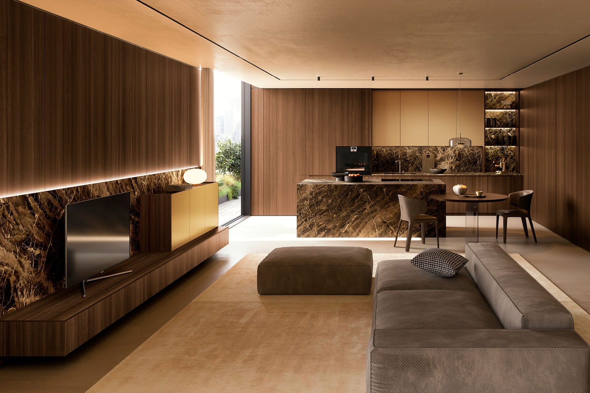
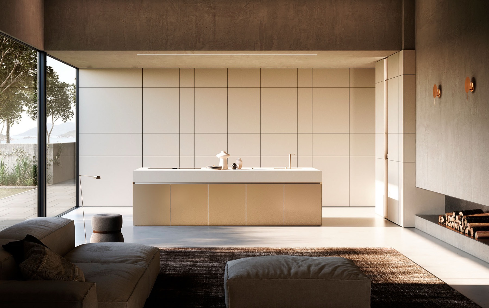
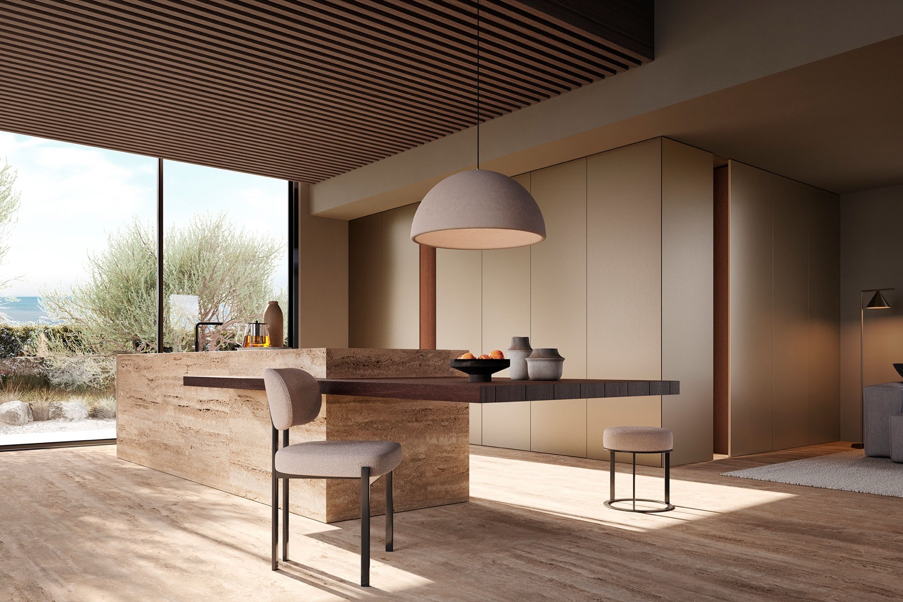
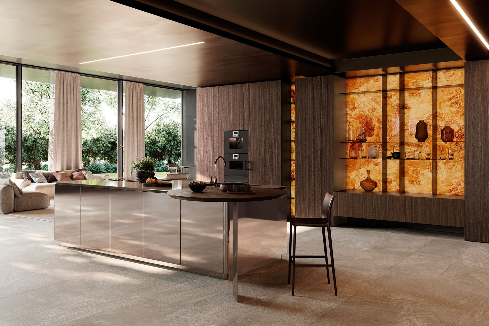
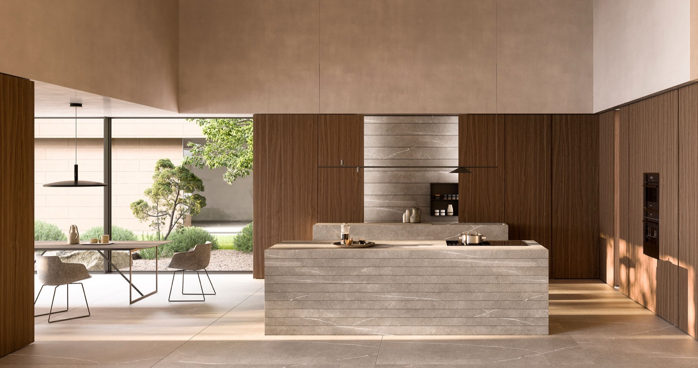
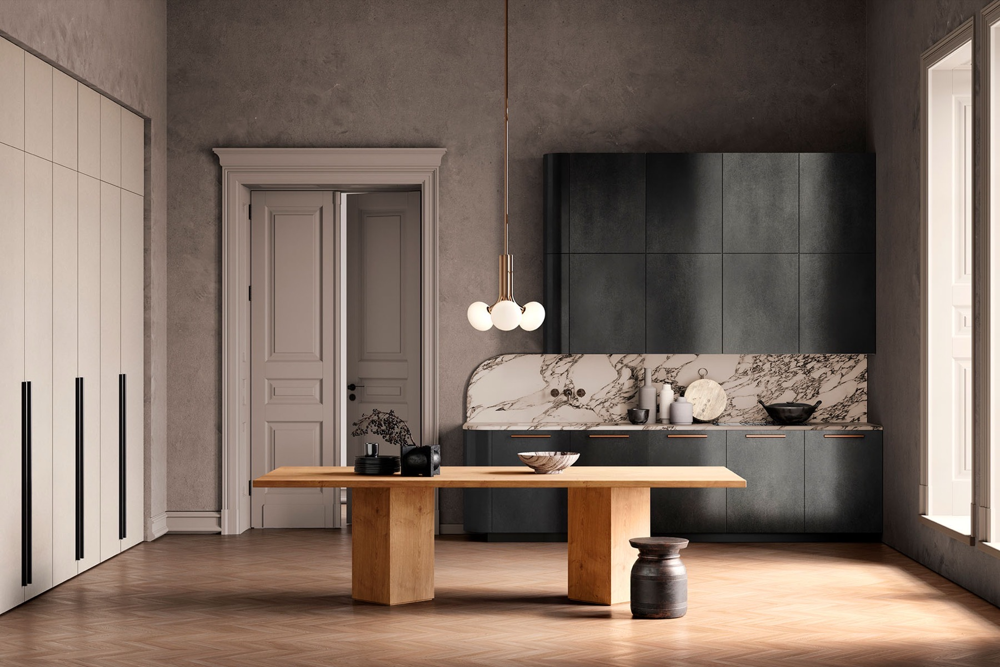
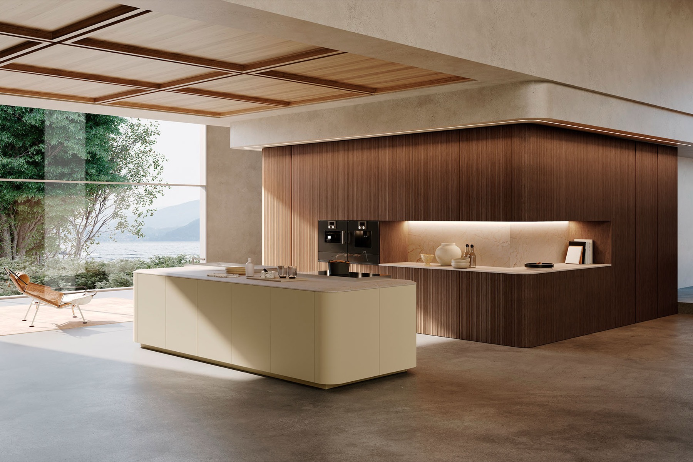
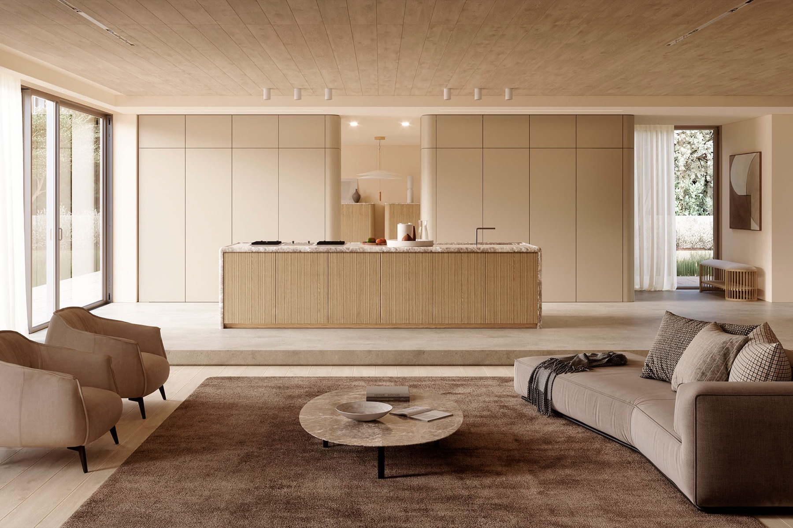
Una historia italiana
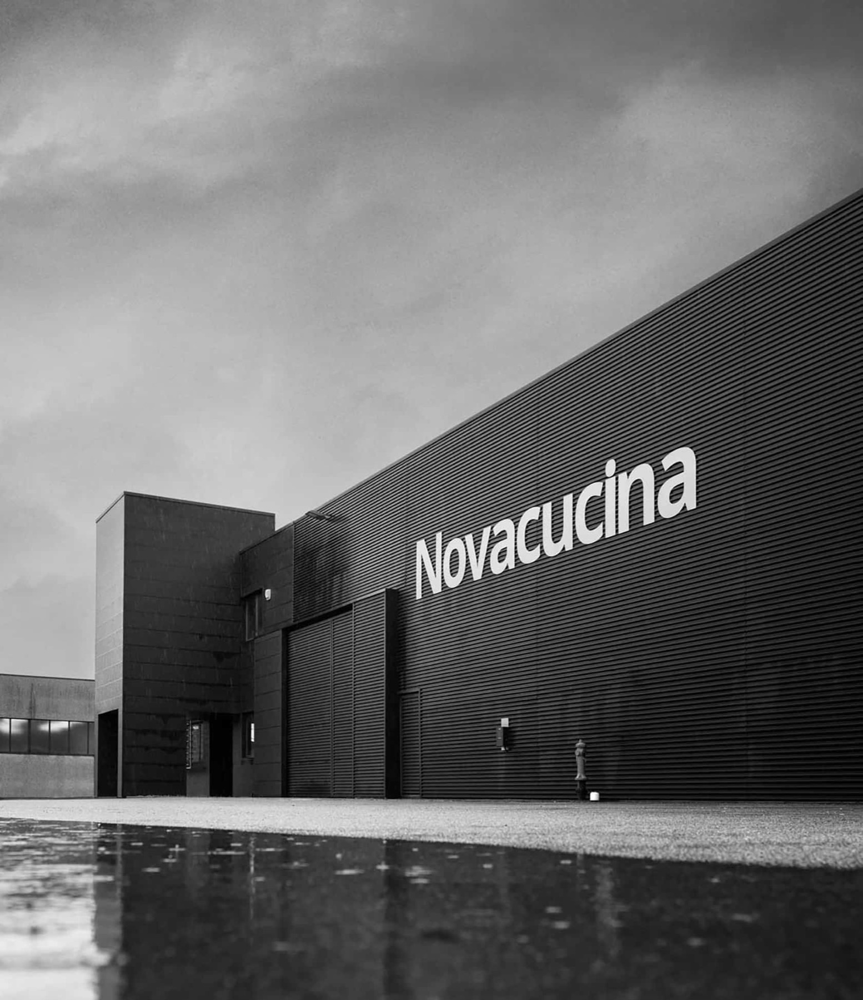
El comienzo
Novacucina nace a principios de los noventa como fabricante de cocinas modulares de estilo clásico, y crece con fuerza en el mercado italiano del mueble.
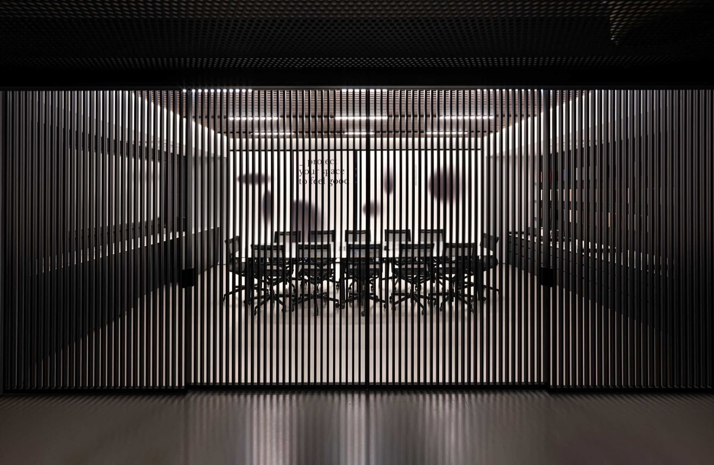
La fábrica crece
A finales de los noventa amplía la planta de producción hasta los 10.000 metros cuadrados cubiertos.

Una nueva era
Con el nuevo milenio llega una nueva línea de producción y el giro hacia la cocina moderna, con foco en el diseño y los materiales. Y un laboratorio artesanal propio para proyectos a medida.
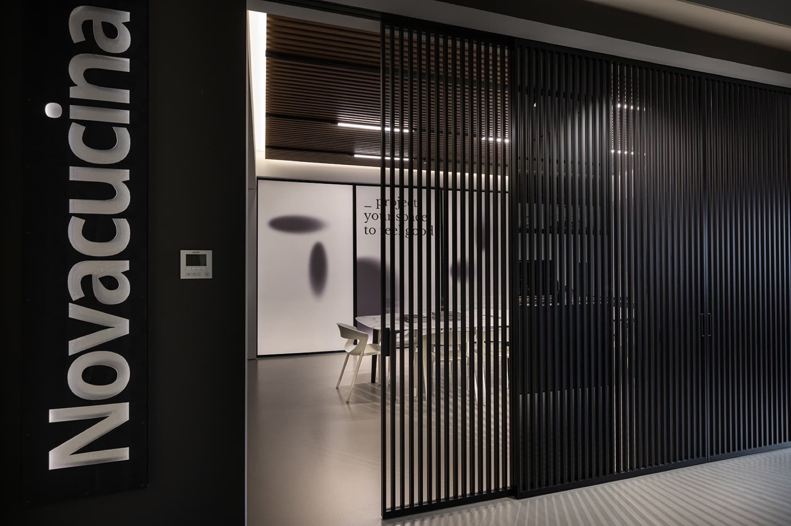
Made in Italy
El corazón sigue siendo la cocina moderna, ampliada con salón y baño en armonía, de la mano de pequeños artesanos de la zona.
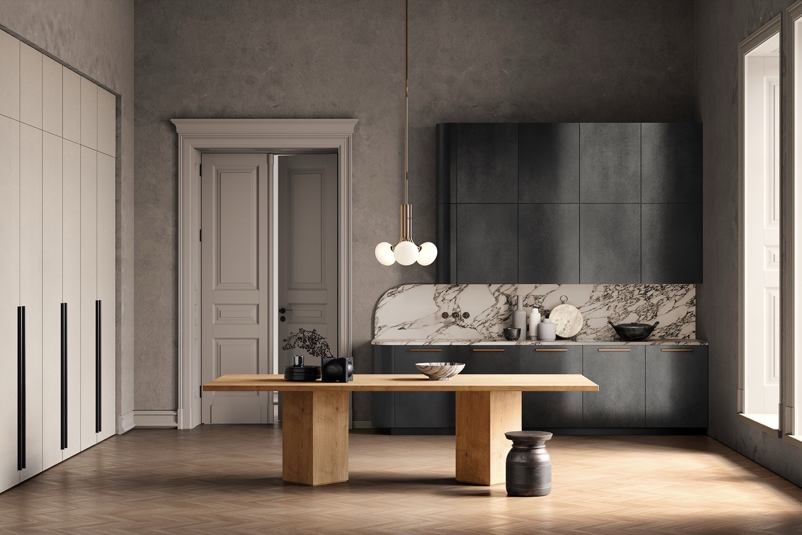
La cocina se abre al salón con las mismas líneas y acabados.
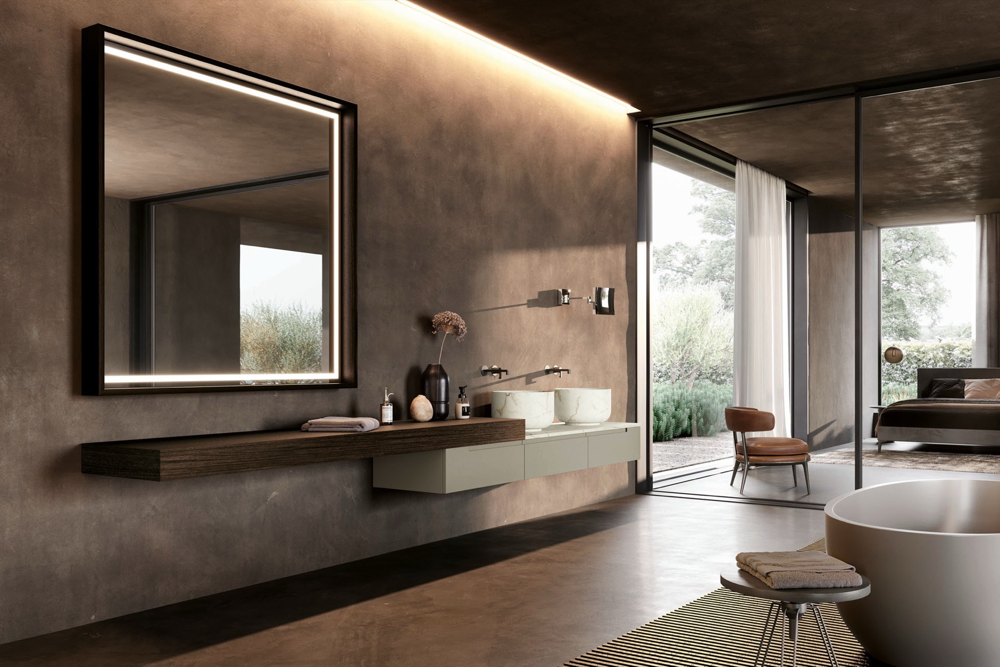
Formas puras que se adaptan a cualquier estilo: Prime, Kyton, Planet, Fly, Line, Smart y MK1.
Del laminado al vidrio
Varios materiales y sistemas de apertura que se combinan entre sí, para que cada proyecto sea distinto.
Al servicio de los diseñadores
Composiciones a medida, espacios personalizados y proyectos contract. Novacucina pone a disposición del interiorista un equipo especializado para ofrecer diseño italiano a precios asequibles.
Diseña tu cocina Novacucina con nosotros
Ven con tu cliente, elegid sistema, acabados y distribución, y nos encargamos de la medición, el suministro y el montaje.